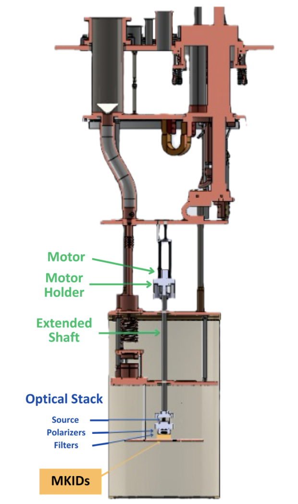

Superconducting Quantum Sensors (MKIDs)
Abstract
High-sensitivity radiation detection is essential for applications ranging from sub-millimeter astronomy to the characterization of quantum materials. Microwave Kinetic Inductance Detectors (MKIDs) represent a transformative technology in this field, leveraging the kinetic inductance effect in superconducting thin films to detect individual photons with high energy and temporal resolution. This project focuses on the development and characterization of MKID and Thermal Kinetic Inductance Detector (TKID) arrays. A primary emphasis of the current work is the establishment of a cryogenic polarization measurement system designed to evaluate sensor response at millikelvin temperatures. By integrating microwave engineering with low-temperature physics, this research aims to optimize the sensitivity and noise performance of these detectors, providing a robust platform for next-generation quantum sensing and imaging applications.
Objective

- To design and characterize high-sensitivity MKID and TKID sensors for quantum-limited radiation detection.
- To develop a specialized cryogenic polarization measurement system for evaluating sensor performance in a millikelvin environment.
- To optimize the external quality factor (Qext) and internal quality factor (Qint) of superconducting resonators to improve energy resolution and multiplexing capabilities.
Methodology

Resonator Design and Simulation:
- Designed quarter-wave (λ/4) and half-wave (λ/2) coplanar waveguide (CPW) resonators utilizing superconducting thin films (e.g., Al, Nb, or TiN).
- Used finite-element analysis to model the kinetic inductance fraction (αk), ensuring the resonator frequency shifts are detectable upon photon absorption.
Cryogenic Measurement Setup:
- Integrated the sensors into a dilution refrigerator capable of reaching base temperatures in the 10–100 mK range.
- Developed a polarization-sensitive readout chain to characterize the sensors' response to varying optical or microwave signal orientations.
Data Acquisition and Signal Processing:
- Utilized homodyne detection and software-defined radio (SDR) platforms to monitor the complex transmission (S21) of the resonators.
- Analyzed the phase and amplitude trajectories of the resonance circle to distinguish between thermal noise and genuine detection events.
Results and Discussion
Note: As this project is currently under development, this section summarizes the work done so far.
- Preliminary designs for the cryogenic polarization system have been finalized, focusing on mitigating stray light and thermal gradients.
- Initial characterization of the superconducting base films has been completed, confirming critical temperatures (Tc) and surface impedances consistent with high-quality detector performance.
- Measurement protocols have been established to quantify the frequency shift and dissipation change as a function of incident power and temperature.
Conclusion
- The establishment of the polarization measurement system marks a significant milestone in the characterization of advanced superconducting sensors.
- Future work will involve full-array testing and the integration of these sensors into larger-scale experimental frameworks at NIST.
- Continued optimization of the fabrication process will target higher quality factors to enable larger multiplexing ratios for high-pixel-count imaging.